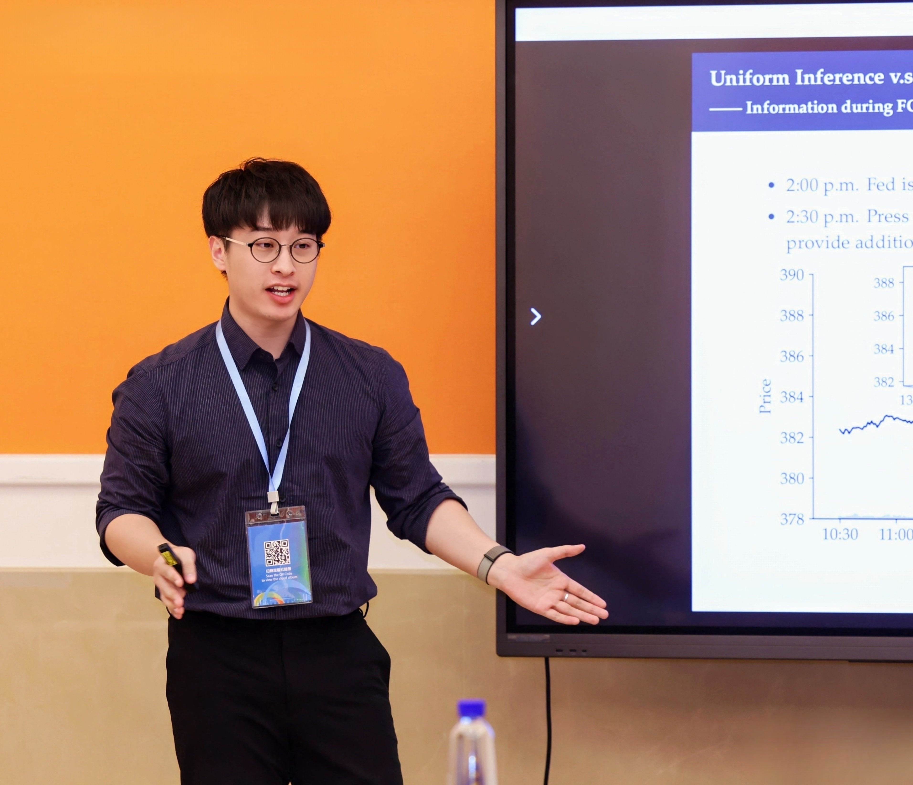

Qiyuan Li
Assistant Professor of Economics
The University of Hong Kong, Faculty of Business and Economics
Econometric Theory · Financial Econometrics
Welcome!
I am an assistant professor of economics at HKU Business School. Prior to this, I obtained a Ph.D. in Economics from Singapore Management University in 2024. My research interests are in econometric theory, with a specialization in financial econometrics.
“Life is like a high-frequency dataset: full of noise, occasional jumps, and hard-to-detect trends.”
Website Statistics